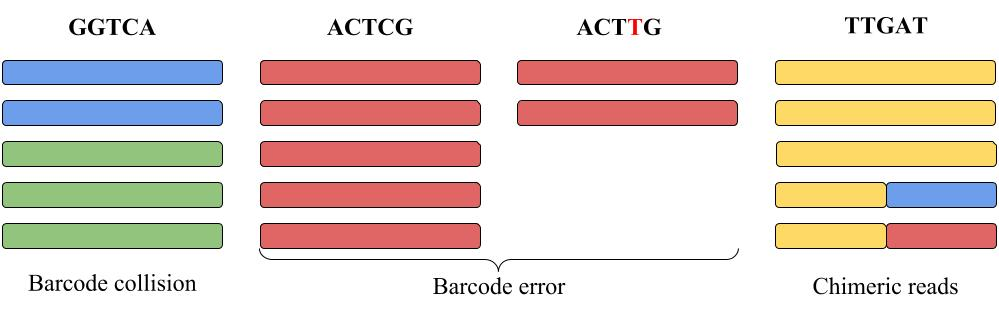

Content
Motivation
Repertoire construction is a complex clustering problem with the largest obstacle of distinguishing natural diversity of antibodies from PCR errors. Using molecular barcoding (UMIs) helps to separate these two sources of variations in Rep-seq and simplifies error correction.
Molecular barcodes
Molecular barcodes are short genetic sequences attached to each RNA molecule so that all amplified copies of this molecule contain the same barcode. Hence errors in reads can be corrected by constructing the consensus of all reads with the same barcode. However, there are three barcoded Rep-seq features which may damage the quality of the repertoire when not taken care of.
Barcode errors. Some reads in barcoded Rep-seq datasets have amplification errors within barcodes. Ignoring barcoding errors leads to an explosion of small clusters that should be merged with larger ones.
Chimeric reads. Some Rep-seq sample preparation protocols produce many chimeric reads (up to 8%). Failure to detect chimeric reads reduces the accuracy of the consensus sequences in the constructed repertoire and may lead to artificially inflated diversity.
Barcode collisions. Unrelated reads can have equal barcodes for two reasons. Either two molecules initially got identical barcodes attached, or barcodes got corrupted during amplification becoming equal afterwards. Ignoring barcode collisions may lead to a loss of natural diversity and corruption of the consensus sequences.
|  |
| Each column represents reads with the same barcode shown on the top of the column. Each color represents reads originating from the same RNA molecule. E.g., blue and green reads in the left column share the same barcode GGTCA (barcode collision). Some of red reads accumulated barcode error during amplification (shown as ACTTG barcode error). The yellow-blue and yellow-red reads are chimeric. |
Molecule quantification
In addition to easier error correction barcoding allows to quantify RNA molecules more precisely. Roughly speaking the number of molecules representing a single clone is the number of barcodes in the corresponding cluster. BarcodedIgReC takes advantage of its barcode correction step to avoid overestimation of the molecule number. One can estimate the number of RNA molecules through the number of reads in the cluster. However, as the following figure shows, such estimation can be very inaccurate.

|
Algorithm
BarcodedIgReC takes as an input demultiplexed paired-end or single reads with unique molecular identifiers (UMIs). Reads should cover variable region of antibodies/TCRs. BarcodedIgReC corrects sequencing and amplification errors and constructs an antibody repertoire.
The algorithm performs the following steps:- VJ Finder: V, J labeling, cleaning, aligning and cropping input reads.
- Clustering using barcode information: read clustering using barcode information and barcode error correction. On this step the algorithm forms clusters of related reads, but some of them still need to be united.
- IgReC: use consensuses of clusters constructed on the previous step as an input set for a non-barcoded IgReC tool. On this step we use custom clustering parameters for IgReC to merge only almost identical sequences.
Clustering using barcode information
On this step BarcodedIgReC focuses on dealing with already mentioned artifacts which are specific for barcoded data. The algorithm groups reads by barcodes. The groups are clustered by distance between reads to resolve barcode collisions. This handles both types of barcode collisions, that is when two molecules get the same barcode, and when two unrelated reads get the same barcode (as a result of almost collided molecule barcodes and a barcode error). After that the clusters which have both close barcodes and consensuses are united.
Results
We observe about 2 amplification errors per read on average for real datasets. We simulated a barcoded dataset with such parameters and obtained the following results reflecting the quality of repertoires constructed by BarcodedIgReC.
Handling artifacts of barcoded datasets
- BarcodedIgReC identifies and corrects 68% of reads with erroneous barcodes. The remaining reads with erroneous barcodes form singleton clusters.
- BarcodedIgReC detects 30% of chimeras introduced by the simulation. The rest of chimeras do not contribute or harm the final repertoire after the result filtering.
- BarcodedIgReC corrects 96% of barcode collisions.
Sensitivity and precision of constructed repertoires
Reconstructed cluster sizes
We analyze how precisely BarcodedIgReC reconstructs cluster size. Figure on the left shows dependence of a number of reads in reconstructed cluster on a number of reads in a reference cluster. The median ratio of corresponding cluster read sizes is 0.81. Figure on the right shows the same dependence, but for molecule number instead of read number. It reflects how well we can estimate molecule number after repertoire construction. The median ratio of corresponding cluster molecule sizes is 0.9.

|

|
Manual and citations
BarcodedIgReC manual can be found here.
Citation: Alexander Shlemov, Sergey Bankevich, Andrey Bzikadze, Dmitriy Chudakov, Yana Safonova, and Pavel A. Pevzner. Reconstructing antibody repertoires from error-prone immunosequencing datasets (submitted)